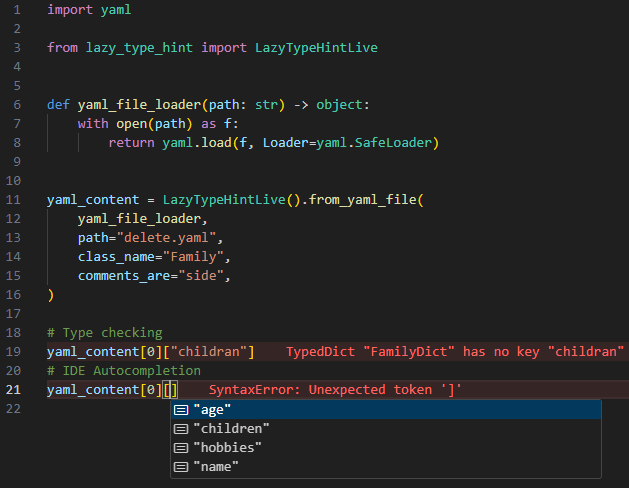

Introduction#
The user can interact this tool via two main APIs:
However, the end purpose is still the same: generating type hint information that can be used by IDEs and type checkers. Both APIs follow a common structure:
from lazy_type_hint import LazyTypeHint, LazyTypeHintLive
obj_typed = LazyTypeHintLive(<CONFIGURATION>).from_**(<PARAMS>)
- Configuration will allow the user to fine-tune the way type information is generated. More information can be seen here
- After the tool has been instantiated, any of the
from_*methods are available depending on the type of input data that you want to type hint. More details are given in section below.
Valid input data#
This section explains different types of data that can be used as input to the tool. Be
aware that, although they are written with the Live API for the sake of simplicity, all
of these functionalities are also available within the Standard API. These are:
From data#
User can give any Python-based data structure as input:
Since we are using the Live API for this example, this is the corresponding
generated file that has been generated and stored in the cache-based folder:

From yaml file#
This tool internally implements its own YAML parser. This can be helpful to embed already existing comments within the YAML file and include them as part of documentation within the generated types.
Observe how the comments of the YAML file were also parsed as docstrings.
Since we are using the Live API for this example, this is the corresponding
generated file that has been generated and stored in the cache-based folder.
from typing import TypedDict
from typing_extensions import NotRequired, TypeAlias
class FamilyDictChildren(TypedDict):
name: str
class FamilyDict(TypedDict):
name: str
"""Name of the parent."""
age: int
"""Age of the person."""
children: FamilyDictChildren
"""Children that the parent have."""
hobbies: NotRequired[list[str]]
"""Possible hobbies."""
Family: TypeAlias = list[FamilyDict]
